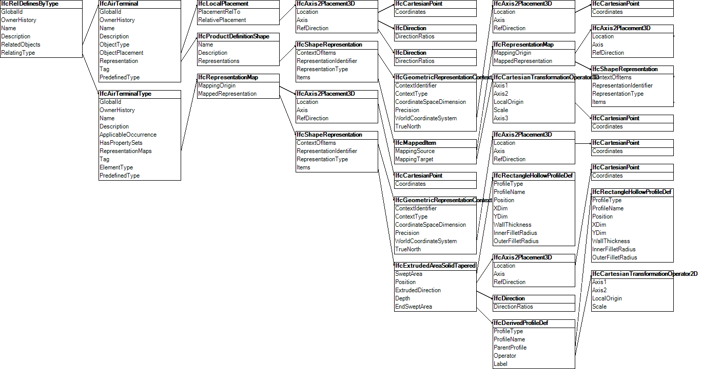

The air terminal occurrence is placed within a building and has its inlet port connected to the outlet port of a duct segment. The air terminal occurrence has mapped geometry according to the type imported from the other file. The duct segment has an associated material profile set of an aluminum hollow circle, an 'Axis' representation indicating the path following a straight line upwards, and a 'Body' representation constructed by extruding the profile along the axis. The aluminum material has a surface style defined using a texture embedded within the file. Figure E17 illustrates the air terminal occurrence connected to the duct segment, where ports are not shown.
NOTE The example contains an air terminal by itself for brevity; in an actual building, such air terminal would likely fill an opening of a ceiling covering within a space.
|
Figure E17 — Air terminal occurrence representation |
The air terminal occurrence is linked to the type using mapped geometry, as illustrated in Figure E18.
|
 |
|
Figure E18 — Air terminal occurrence object graph |
 Link to this page
Link to this page